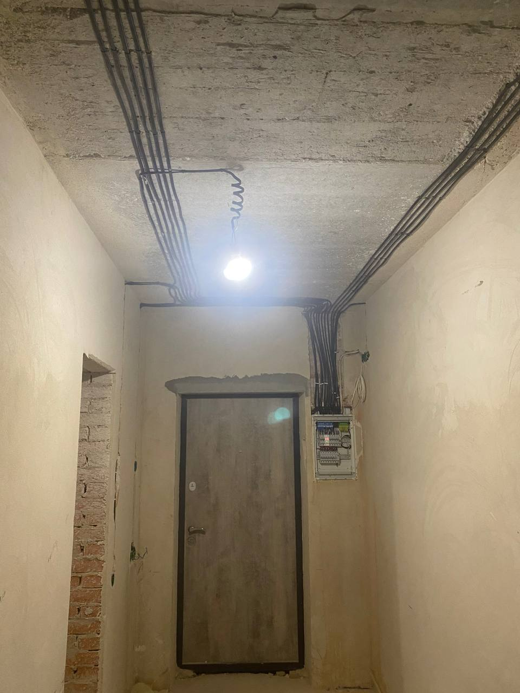
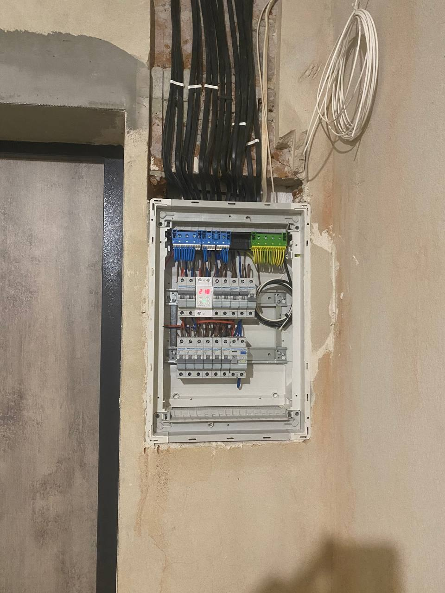

Приклади моїх робіт
Завжди дотримуюсь стандартів безпеки та естетики. Ось кілька прикладів останніх проєктів:



10 років досвіду. Якість. Гарантія. Надійність.
Мене звати Віталік, мені 35 років. Уже понад 10 років займаюсь електромонтажем. Проживаю і працюю в Івано-Франківську. Виконую всі види електромонтажних робіт — швидко, акуратно та з гарантією. Роблю на совість, не за всі гроші світу.
Завжди дотримуюсь стандартів безпеки та естетики. Ось кілька прикладів останніх проєктів:


📞 Телефон / Viber / Telegram: +38 096 090 0463
📧 Email: electrikif@gmail.com
🕒 Працюю: Пн–Сб з 9:00 до 20:00